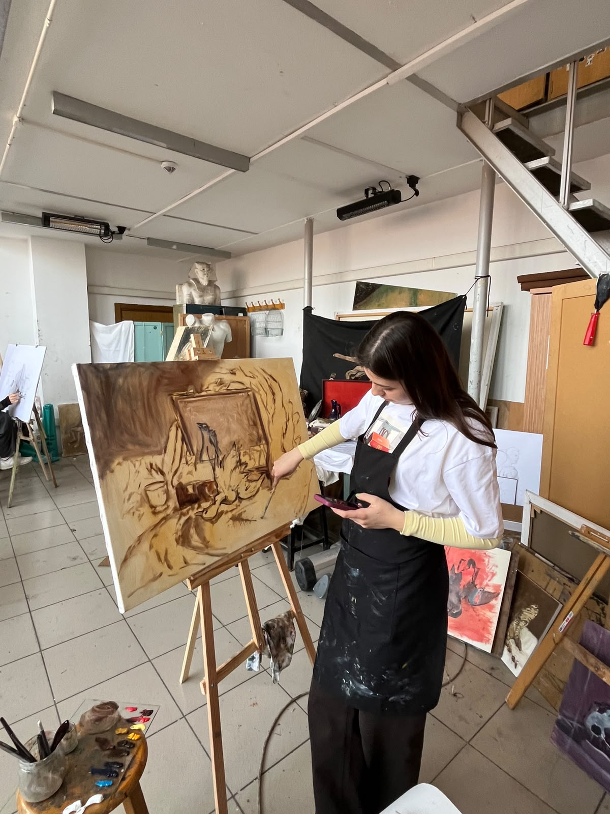

Biography
Born in Ayvalık in 2005, Simay Gül is a visual artist and painting student. She graduated from the Painting Department of Ayvalık Sebahat Cihan Şişman High School of Fine Arts. She is currently pursuing her undergraduate studies in the Painting Department at Mimar Sinan Fine Arts University. She bases her artistic practice primarily on observation-based work. The spaces she encounters in daily life, the natural environment, living spaces, and the human figure form the fundamental starting point of her work. She prioritizes direct observation in her art and aims to explore the relationships between light, color, and form on the canvas. Her primary mediums are oil painting and drawing. Through her work in figure, portrait, still life, and landscape, she combines the technical foundation of classical painting education with a personal approach to observation. Participating in various painting competitions both before and during her art education, she received provincial rankings and honorable mentions during her middle and high school years. She continues to exhibit her work in student group exhibitions while pursuing her university studies.